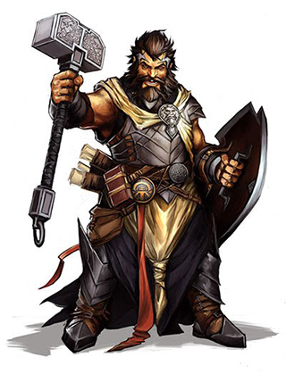

In faith and the miracles of the divine, many find a greater purpose. Called to serve powers beyond most mortal understanding, all priests preach wonders and provide for the spiritual needs of their people. Clerics are more than mere priests, though; these emissaries of the divine work the will of their deities through strength of arms and the magic of their gods. Devoted to the tenets of the religions and philosophies that inspire them, these ecclesiastics quest to spread the knowledge and influence of their faith. Yet while they might share similar abilities, clerics prove as different from one another as the divinities they serve, with some offering healing and redemption, others judging law and truth, and still others spreading conflict and corruption. The ways of the cleric are varied, yet all who tread these paths walk with the mightiest of allies and bear the arms of the gods themselves.
Role: More than capable of upholding the honor of their deities in battle, clerics often prove stalwart and capable combatants. Their true strength lies in their capability to draw upon the power of their deities, whether to increase their own and their allies’ prowess in battle, to vex their foes with divine magic, or to lend healing to companions in need. As their powers are influenced by their faith, all clerics must focus their worship upon a divine source. While the vast majority of clerics revere a specific deity, a small number dedicate themselves to a divine concept worthy of devotion—such as battle, death, justice, or knowledge—free of a deific abstraction. (Work with your GM if you prefer this path to selecting a specific deity.)
Alignment: A cleric’s alignment must be within one step of her deity’s, along either the law/chaos axis or the good/evil axis.
Hit Die: d8.
Starting Wealth: 4d6 × 10 gp (average 140 gp.) In addition, each character begins play with an outfit worth 10 gp or less.
Class Skills The cleric’s class skills are Appraise (Int), Craft (Int), Diplomacy (Cha), Heal (Wis), Knowledge (arcana) (Int), Knowledge (history) (Int), Knowledge (nobility) (Int), Knowledge (planes) (Int), Knowledge (religion) (Int), Linguistics (Int), Profession (Wis), Sense Motive (Wis), and Spellcraft (Int).
Skill Ranks Per Level: 2 + Int modifier.